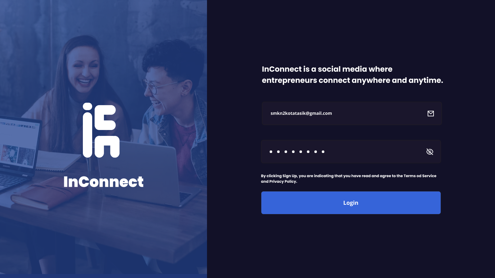
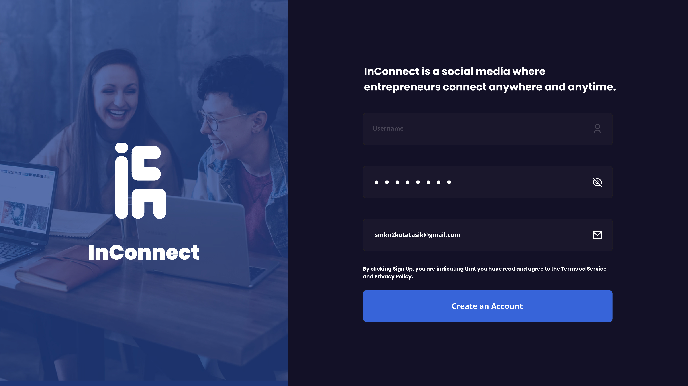
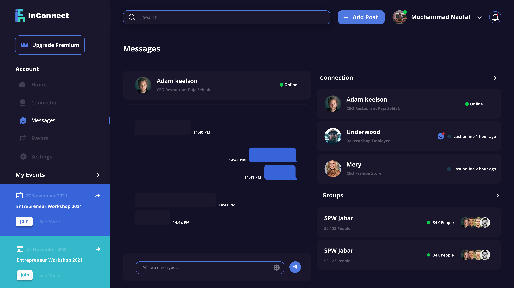
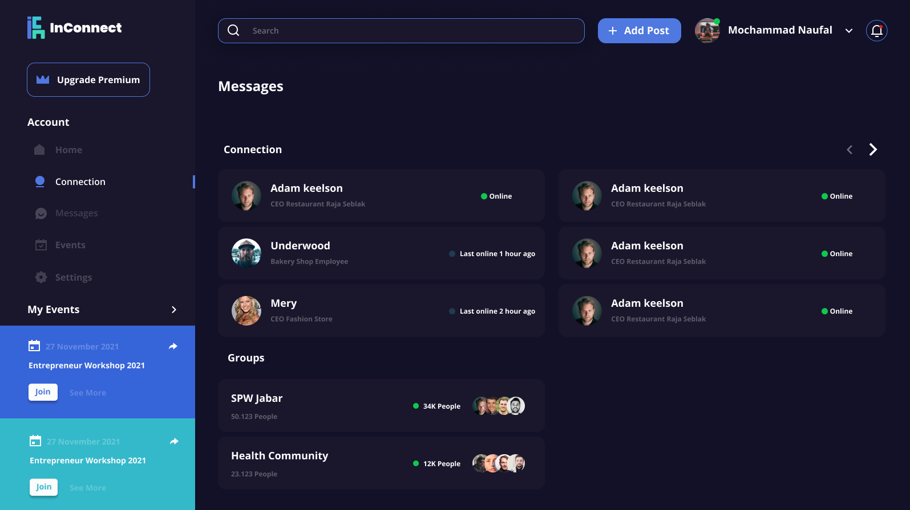
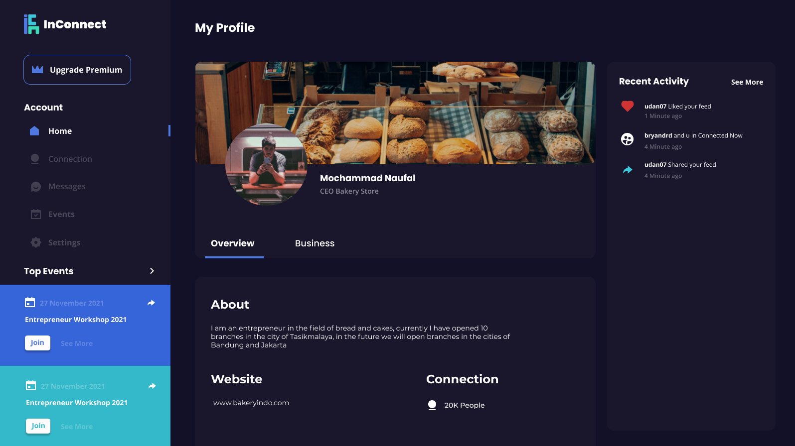
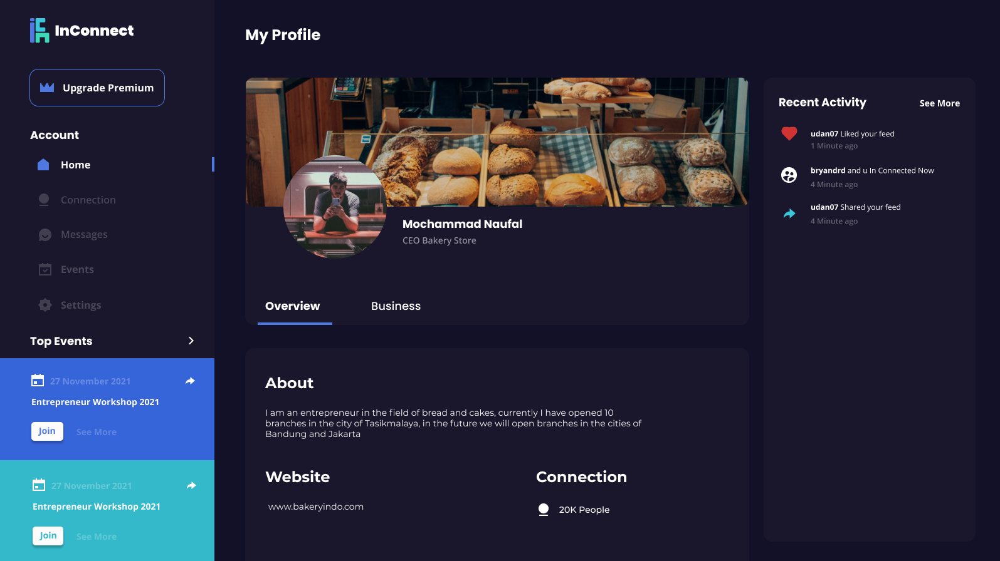
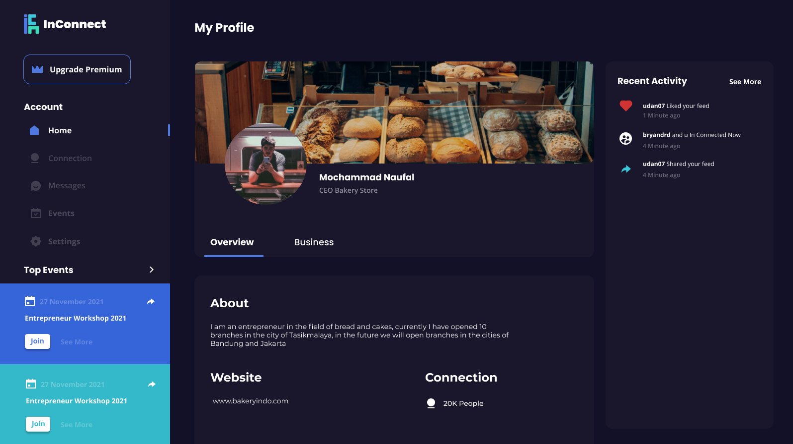

## Inspiration
inspired by linkedin inconnect was created to make connections between entrepreneurs who are expected to help business development
## What it does
like social media in general, here you can post comments like likes and so on, the difference is in the naming of followers, and many features that will make business people make their connections wider
## How we built it
we built with php, html and css languages, starting with the design using figma and continued with the programming process
## Challenges we ran into
the challenge we faced was because creating social media that had many features we ran out of time and there were some features that didn't work because they weren't created perfectly.
## Accomplishments that we're proud of
We are proud of our work because we can create a website with an attractive appearance in such a short time
## What we learned
We have learned a lot but what we are very grateful for is that we can learn how we organize our work, push it to the limit and we can make simple logic because of the pressure of time.
## What's next for InConnect
we will continue the development of our project, and complete the features we designed, and hopefully can be an inspiration and maybe work with us
 
